Оновлення Платформи та реєстрів до версії 1.9.7: спеціальні кроки
- 1. Мета інструкції
- 2. Оновлення Платформи
- 3. Кроки після оновлення Платформи
- 4. Оновлення реєстру
- 5. Відомі проблеми
- 6. Виправлення помилки при відновленні центрального компонента
control-plane - 7. Важливі виправлення (хотфікси)
1. Мета інструкції
Метою цієї сторінки є відображення процесу оновлення та спеціальних кроків, необхідних для оновлення кластера Платформи та реєстрів з версії 1.9.6.34 до 1.9.7.42.
2. Оновлення Платформи
2.1. Розгортання нової версії Інсталера
|
Виконайте оновлення Платформи згідно з інструкціями: |
2.2. Оновлення інфраструктурних компонентів Платформи
Цей крок описує стандартний процес оновлення інфраструктурних компонентів Платформи за допомогою пайплайну cluster-mgmt в адміністративній панелі Control Plane.
Перед тим, як запускати оновлення пайплайну cluster-mgmt, необхідно створити EDPComponent nexus у просторі імен control-plane. Для цього:
-
Перейдіть до проєкту control-plane.
-
Відкрийте розділ .
-
У пошуковому рядку введіть
EDPComponentта натисніть кнопкуCreate EDPComponent.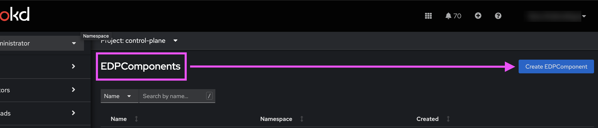
-
Вставте наступний код:
Create EDPComponent
apiVersion: v1.edp.epam.com/v1 kind: EDPComponent metadata: annotations: control-plane-console/description: >- Центральне сховище артефактів, компонентів та їх залежностей, з яких складається кожна окрема підсистема та Платформа в цілому. Збереження артефактів платформи. control-plane-console/display-name: Сховище артефактів Платформи (Control Plane Nexus) control-plane-console/display-order: '3' control-plane-console/operational-zone: platform-administration-zone control-plane-console/platform-only: 'true' meta.helm.sh/release-name: openshift-edp-components meta.helm.sh/release-namespace: control-plane name: nexus namespace: control-plane labels: app.kubernetes.io/managed-by: Helm spec: icon: >- PHN2ZyB3aWR0aD0iNDYiIGhlaWdodD0iNTIiIHZpZXdCb3g9IjAgMCA0NiA1MiIgZmlsbD0ibm9uZSIgeG1sbnM9Imh0dHA6Ly93d3cudzMub3JnLzIwMDAvc3ZnIj4KPHBhdGggZD0iTTIzLjU0NDggMzMuMjMwOVYyNC4wNzRDMjMuOTcxOSAyMy41ODgzIDI0LjQ5NTggMjMuMTk3MyAyNS4wODMgMjIuOTI2QzI1LjY3MDEgMjIuNjU0NyAyNi4zMDc0IDIyLjUwOTEgMjYuOTU0MSAyMi40OTg2QzI3LjI5MjcgMjIuNDg4OCAyNy42MzEzIDIyLjUxNzcgMjcuOTYzMyAyMi41ODQ4VjE5LjAyNzhDMjcuMTEzNSAxOS4wNjQ4IDI2LjI4MTEgMTkuMjgwMSAyNS41MTk5IDE5LjY1OTZDMjQuNzU4NyAyMC4wMzkyIDI0LjA4NTggMjAuNTc0NSAyMy41NDQ4IDIxLjIzMDlWMTkuMzcyNEgxOS44NTI1VjMzLjIzMDlIMjMuNTQ0OFoiIGZpbGw9IiMyOUI0NzMiLz4KPHBhdGggZD0iTTAgMTIuNTI5MlYzOC44NDMxTDIyLjc2OTIgNTJMNDUuNTM4NSAzOC44NDMxVjEzLjkwNzdMMzkuOTUwOCAxNy4xMzIzVjM1LjYxODVMMjIuNzY5MiA0NS41Mzg1TDUuNiAzNS42MTg1VjE1Ljc2NjJMMjEuNjk4NSA2LjQ2MTU0VjBMMCAxMi41MjkyWiIgZmlsbD0iIzFDMUYyQSIvPgo8cGF0aCBkPSJNMjMuOTM4NyAwVjYuNDYxNTRMMzkuMDUyNiAxNS4yTDQ0LjY0MDMgMTEuOTc1NEwyMy45Mzg3IDBaIiBmaWxsPSIjMjlCNDczIi8+Cjwvc3ZnPg== type: nexus url: 'https://nexus.<dns-wildcard>/nexus/' visible: trueПереконайтеся, що параметр
urlвказує на правильне посилання до Nexus вашого кластера. Замініть<dns-wildcard>на домен та піддомени кластера, щоб вказати валідне посилання.Наприклад, якщо ваш домен кластера
cluster-environment.project-name.projects.example.com, то посилання доnexusбуде:metadata: url: 'https://nexus.apps.cluster-environment.project-name.projects.example.com/nexus/'Тобто
<dns-wildcard>тут —apps.cluster-environment.project-name.projects.example.com. -
Далі виконайте стандартну процедуру оновлення центральних/інфраструктурних компонентів Платформи за допомогою пайплайну cluster-mgmt.
Див. детальніше на сторінці Оновлення інфраструктурних компонентів Платформи.
3. Кроки після оновлення Платформи
3.1. Необхідні зміни у Wiremock Deployment після оновлення
Після оновлення Платформи, необхідно внести наступні зміни у файл deploy-templates/templates/deployment.yaml, у репозиторій components/registry/wiremock, до гілки 1.5.0-SNAPSHOT.7:
spec:
...
strategy:
type: Recreate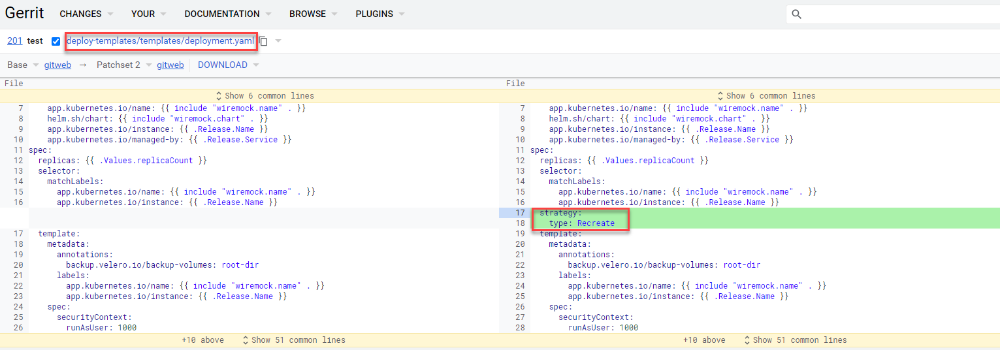
Це забезпечить правильний рестарт компонента wiremock під час подальшого оновлення реєстру.
3.2. Адаптація registry-postgres для сумісності з OKD 4.12
Щоб запобігти проблемам при створенні реєстрів на версії 1.9.6 після оновлення OKD до 4.12 (див. детальніше — Оновлення версії OKD з 4.11 до 4.12), необхідно внести зміни до репозиторію registry-postgres.
-
Увійдіть до Gerrit у простор імен
control-plane. У розділі BROWSE оберіть Repositories.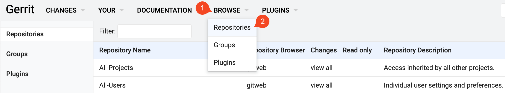
-
У вікні пошуку репозиторіїв вкажіть наступний шлях:
components/registry/registry-postgres
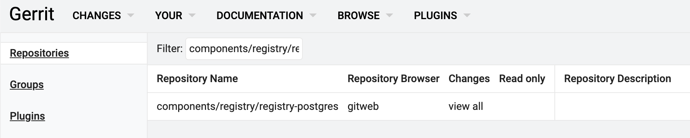
-
Перейдіть до знайденого репозиторію registry-postgres.
-
Оберіть розділ Commands та натисніть кнопку
Create change.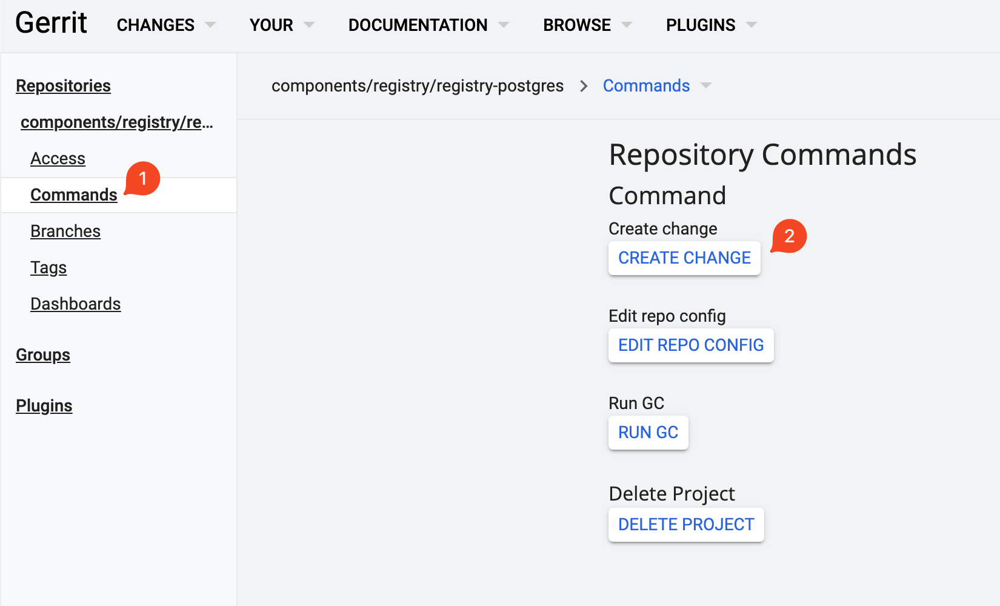
-
У полі Select branch for new change введіть назву гілки
1.9.6.2та у полі Description введіть наступний опис:Change apiVersion for audit-clean-cron-job to v1.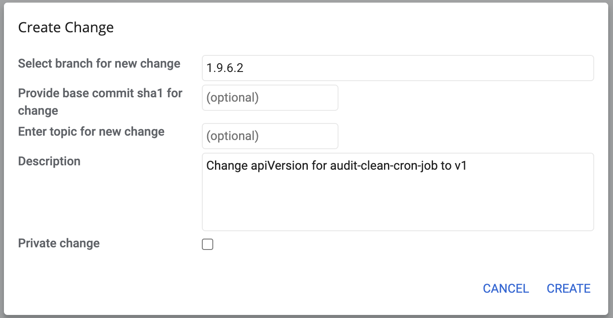
-
Автоматично відкриється вікно редагування. У правому верхньому куті натисніть
Edit.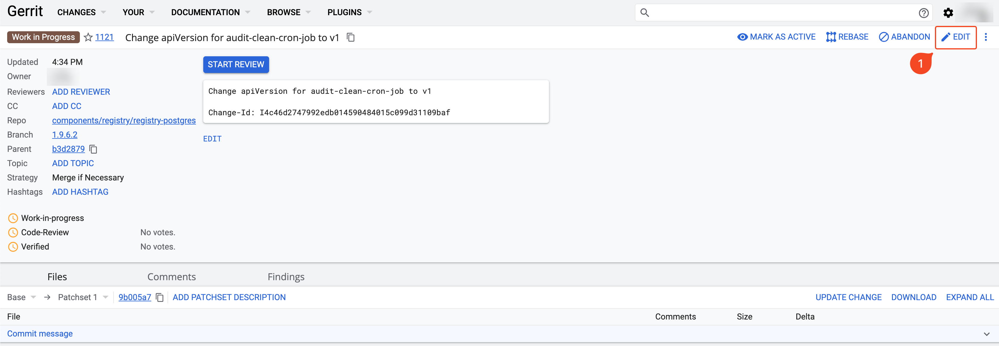
Далі натисніть кнопку
ADD/OPEN/UPLOAD.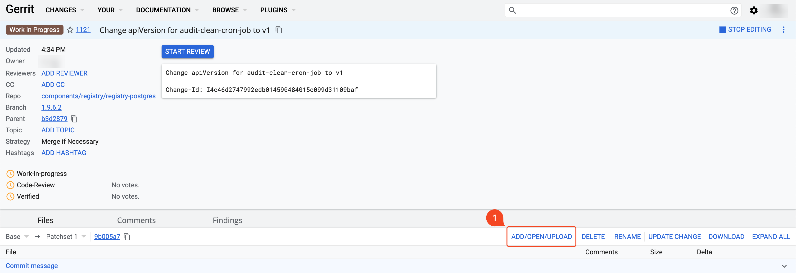
-
В автоматично відкритому вікні пошуку файлів вкажіть наступний шлях:
deploy-templates/templates/audit-clean-cron-job.yaml
Оберіть знайдений файл та натисніть
Confirm.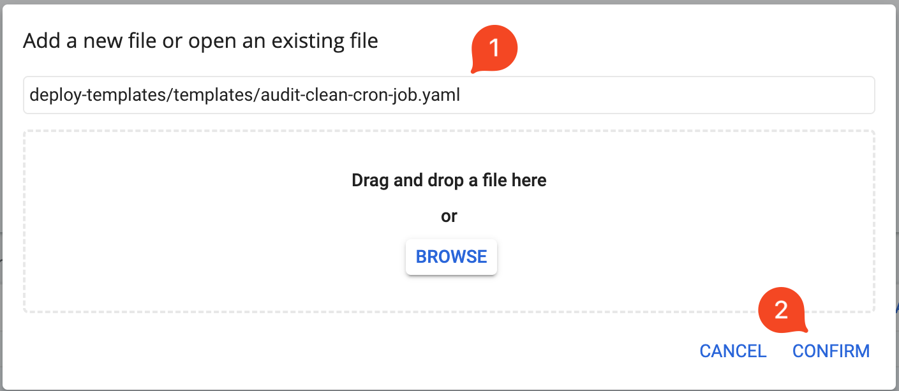
-
У вікні редагування файлу audit-clean-cron-job.yaml замініть перший рядок:
apiVersion: batch/v1beta1"
на
apiVersion: batch/v1
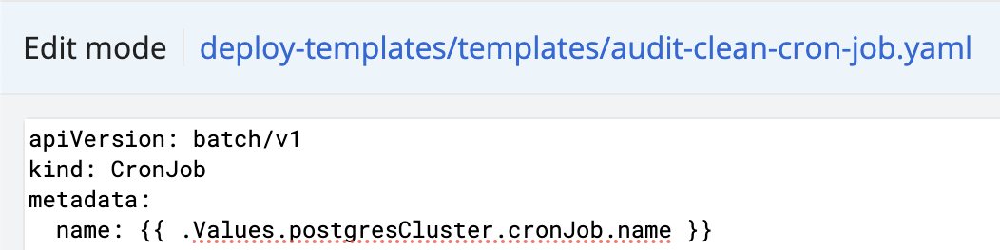
Після виконаних змін, у правому верхньому куті натисніть
Save & Publish.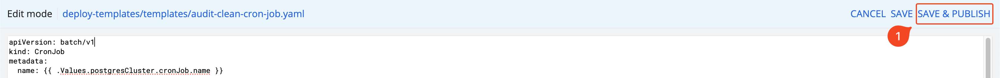
-
Після автоматичного переходу до сторінки із виконаною зміною, натисніть кнопку
Start Review, виставте відповідні оцінки та натиснітьSend and start review.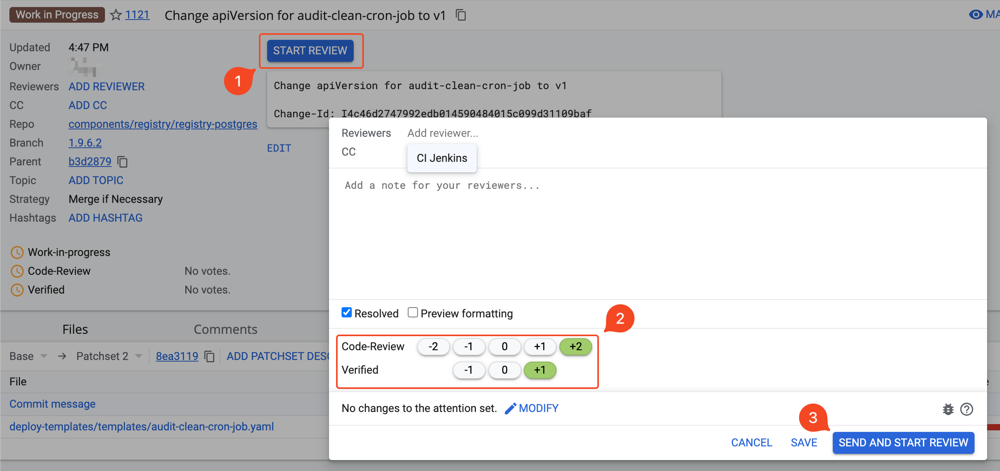
-
Застосуйте запропоновану зміну. Для цього натисніть
Submitу правому верхньому куті.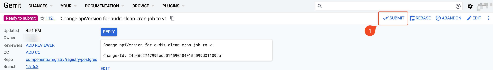
3.3. Адаптація jaeger-operator для сумісності з OKD 4.12
Поточна версія jaeger-operator не може працювати з останньою версією OKD. Це відбувається через те, що у новій версії OKD було видалено Kubernetes API batch/v1beta1, яке використовується для ресурсу CronJob. Така зміна перешкоджає оновленню до OKD версії 4.12. Додаткову інформацію можна знайти в офіційній документації OKD.
Для розв’язання цієї проблеми слід оновити jaeger-operator до версії 1.39.0. Виконайте наступні кроки:
-
Застосуйте нові Custom Resources Definitions (CRD) через термінал. Для цього завантажте файли cert-manager-crds.yaml та jaeger-crd.yaml й виконайте наступні команди:
$ oc apply -f cert-manager-crds.yaml $ oc replace -f jaeger-crd.yaml -
Відкрийте Gerrit та перейдіть до репозиторію service-mesh. Оберіть вкладку Branches.
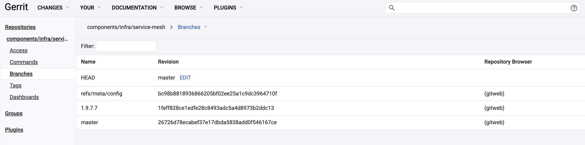
-
Створіть нову гілку, натиснувши у правому верхньому куті кнопку
Create New. При створенні, підставте значення поля Revision з актуальної на цей час гілки (наприклад, для Платформи версії 1.9.7 це гілка1.9.7.7).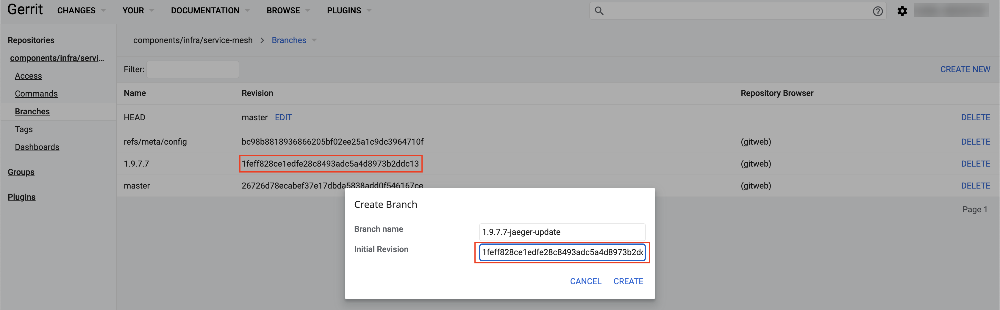
-
Через термінал клонуйте репозиторій service-mesh зі створеною на попередньому кроці гілкою.
$ git clone -b 1.9.7.7-jaeger-update ... $ cd service-mesh -
Завантажте патчсет змін ccc6194.diff, та покладіть файл у директорію service-mesh.
-
Застосуйте зміни наступною командою:
$ git apply ccc6194.diffПри застосуванні цього патчсету можуть показуватися попередження (WARNING). Таку поведінку можна ігнорувати та починати виконання наступного кроку. 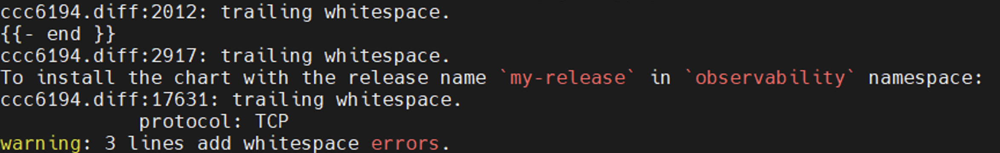
-
Переконайтеся, що зміни застосовано, внесіть ваші оновлення та виконайте
git push.$ git status $ git add deploy-templates/ $ git commit -m "Update jaeger-operator" $ git push origin HEAD:refs/for/1.9.7.7-jaeger-update
-
У щойно створеній зміні в Gerrit натисніть кнопку
Replyта виставте відповідні оцінки.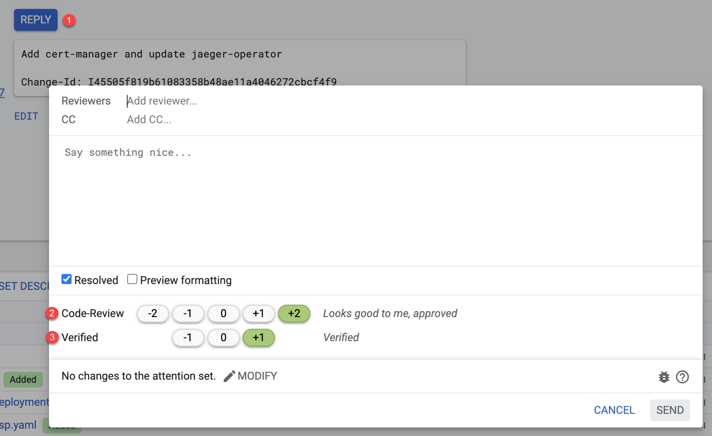
-
Застосуйте зміни натисканням кнопки
Submitу правому верхньому куті. -
Перейдіть до репозиторію cluster-mgmt. На вкладці Commands натисніть кнопку
Create Changeта заповніть наступні поля:-
У полі Select branch for new change вкажіть
master. -
У полі Description вкажіть опис зміни:
update version of service-mesh.
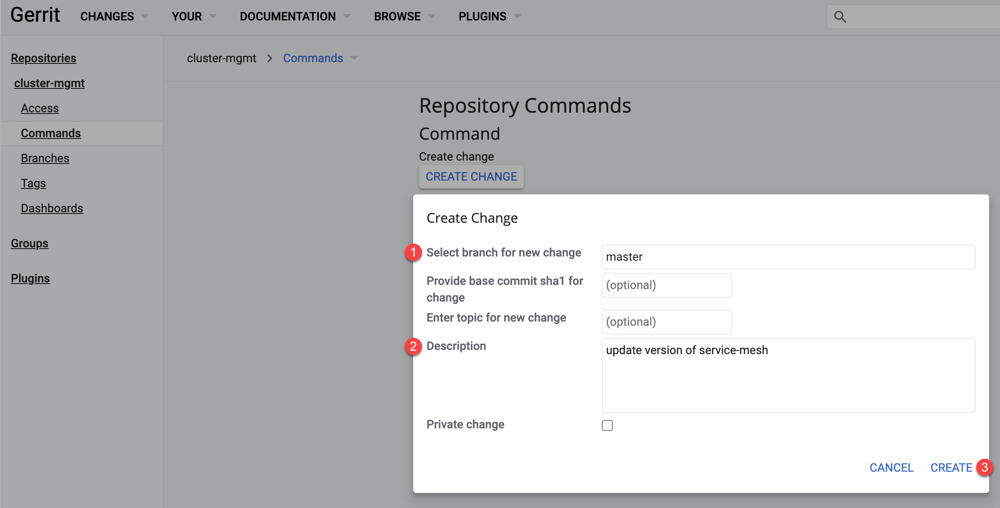
-
-
Ви будете автоматично перенаправлені до новоствореної зміни. Натисніть кнопку
Edit.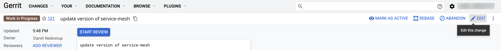
-
У полі пошуку файлів знайдіть наступний файл за шляхом:
properties/cluster-mgmt.yaml. НатиснітьConfirm.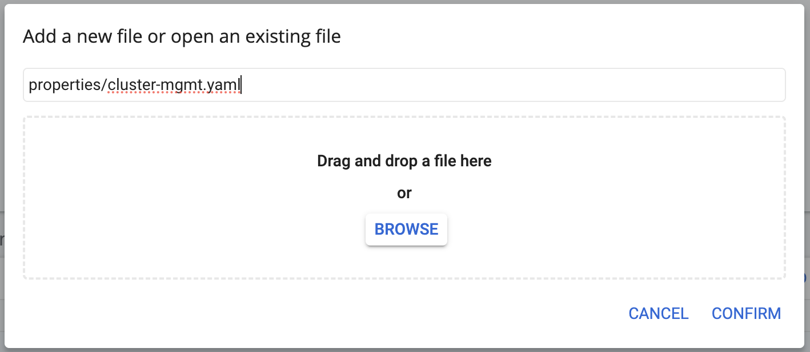
-
У вікні редагування знайдіть блок для репозиторію service-mesh та змініть поля
versionтаbranchна назву гілки, яку було створено на одному з попередніх кроків. У нашому випадку назва гілки —1.9.7.7-jaeger-update.Приклад блоку після редагування- name: service-mesh labels: type: remote update_scc: false isbranch: false path: components/infra/ repoURL: ssh://jenkins@gerrit.mdtu-ddm-edp-cicd:32114/mdtu-ddm/infrastructure/service-mesh.git branch: 1.9.7.7-jaeger-update version: 1.9.7.7-jaeger-update values: [] -
Після редагування коду, у верхньому правому куті натисніть кнопку
Save & Publish.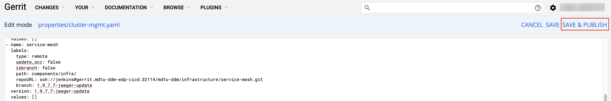
-
Повторіть процес виставлення оцінок та застосування зміни на прикладі кроків Застосування патчсету для jaeger-operator та Commit та push змін до Gerrit.
Після застосування зміни, запуститься пайплайн в Jenkins для
cluster-mgmt.Після успішного проходження cluster-mgmt-пайплайну, слід перевірити версію
jaeger-operator. Це можна зробити у подіjaeger-operatorпроєктуistio-system. Версія образу повинна дорівнювати1.39.0.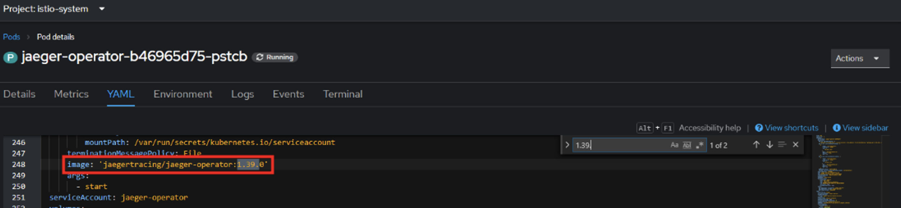
Також перевірте наявність роутів. Це можна зробити у розділі проєкту
istio-system. Має існувати роутjaeger.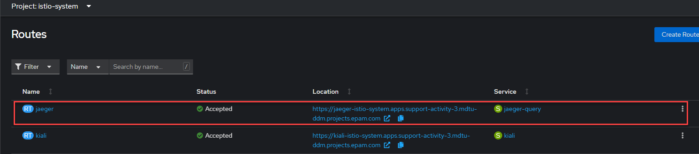
4. Оновлення реєстру
-
Оновіть реєстр до нової версії відповідно до інструкції Оновлення компонентів реєстру. При створенні запита на оновлення, не підтверджуйте його. У 1.9.7 відбулися глобальні зміни з переходом на Єдиний шаблон (див. детальніше — Оптимізація процесу створення реєстрів: мінімізація шаблонів і гнучкість налаштувань), тому необхідно виконати ручні зміни у процесі оновлення реєстрів.
Після створення запита на оновлення до версії 1.9.7, перейдіть у Gerrit за посиланням з Control Plane та виконайте міграцію налаштувань, описану нижче.
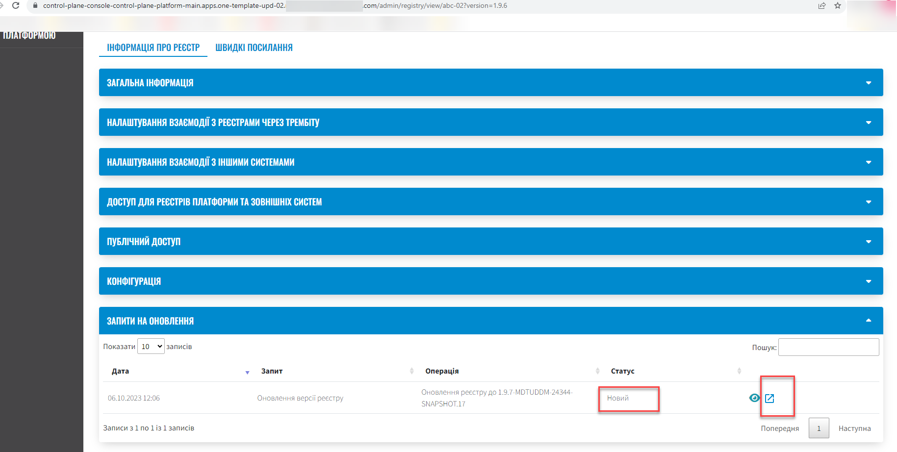
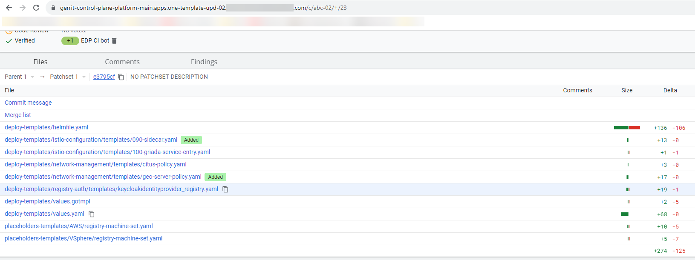
4.1. Оновлення наявних реєстрів
Для плавного переходу до нового підходу з єдиним шаблоном, необхідно внести зміни у файл deploy-templates/values.yaml реєстру.
4.1.1. Налаштування параметрів віртуальних машин
Залежно від типу інфраструктури, залиште необхідні параметри та заповніть значеннями, на яких працює реєстр. Для цього внесіть зміни у файл deploy-templates/values.yaml до наступної секції:
global:
...
computeResources:
instanceCount: 2
awsInstanceType: "r5.2xlarge"
awsSpotInstance: false
awsSpotInstanceMaxPrice: ""
awsInstanceVolumeType: "gp3"
instanceVolumeSize: 80
vSphereInstanceCPUCount: 8
vSphereInstanceCoresPerCPUCount: 1
vSphereInstanceRAMSize: 32768-
Секція
computeResourcesДО змін має такий вигляд: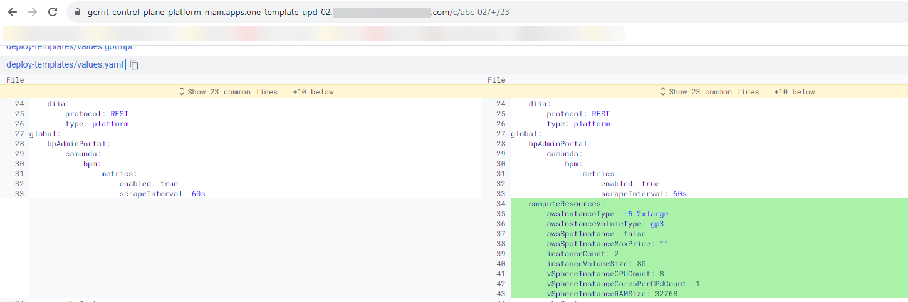
-
У налаштуваннях для AWS, значення параметрів змінені на значення з наявних налаштувань реєстру.
global: ... computeResources: instanceCount: 2 awsInstanceType: "r5.2xlarge" awsSpotInstance: false awsSpotInstanceMaxPrice: "" awsInstanceVolumeType: "gp3" instanceVolumeSize: 80 -
Відповідно у випадку налаштувань для vSphere, видаліть параметри для AWS та внесіть актуальні значення, наприклад:
global: ... computeResources: instanceCount: 2 instanceVolumeSize: 120 vSphereInstanceCPUCount: 8 vSphereInstanceCoresPerCPUCount: 1 vSphereInstanceRAMSize: 32768
4.1.2. Редагування ресурсів, кількість реплік/або HPA
Перенесіть встановлені значення з вашого реєстру. При використанні параметрів за замовчуванням, нічого змінювати не треба.
global:
...
registry:
...
bpms:
replicas: 1
hpa:
enabled: false
minReplicas: 1
maxReplicas: 3
istio:
sidecar:
enabled: true
container:
envVars:
JAVA_OPTS: "-Xms1536m -Xmx1536m -Duser.timezone=UTC"Якщо необхідно ввімкнути HPA, змінюйте значення у відповідній секції. Зверніть увагу, що в такому випадку необхідно встановити й параметри ресурсів контейнера:
global:
...
registry:
...
hpa:
enabled: true
minReplicas: 1
maxReplicas: 3
container:
resources:
limits:
cpu: "2"
requests:
cpu: "1"
memory: "4Gi
...4.1.3. Редагування ресурсів контейнера та/або istio sidecar
Параметри ресурсів контейнера необхідно внести й без включеного HPA, якщо вони були попередньо визначені.
Також є можливість параметризувати ресурси для istio sidecar, якщо він був активований. Наприклад:
global:
...
registry:
...
userProcessManagement:
replicas: 1
hpa:
enabled: false
minReplicas: 1
maxReplicas: 3
istio:
sidecar:
enabled: true
resources:
limits:
cpu: 350m
memory: 128Mi
requests:
cpu: 350m
memory: 128Mi
container:
envVars:
JAVA_OPTS: "-Xms512m -Xmx512m"
resources:
limits:
cpu: "2"
requests:
cpu: "1"
memory: 4Gi4.1.4. Редагування maxPoolSize для компонентів restApi та kafkaApi
За потреби відредагуйте значення maxPoolSize для компонентів restApi та kafkaApi, відповідно до попередніх налаштувань вашого реєстру:
global:
...
registry:
...
kafkaApi:
...
datasource:
maxPoolSize: 104.1.5. Додаткові умови при розгорнутому геосервері
Якщо реєстр має геосервер, змініть значення параметра geoServerEnabled на true.
global:
...
geoServerEnabled: true4.2. Оновлення реєстрів версії 1.9.6, що були створені після оновлення Платформи до 1.9.7
Якщо реєстр 1.9.6 було створено на оновленій платформі 1.9.7, для його оновлення необхідно змінити значення анотації та перезапустити пайплайн cluster-mgmt у центральному Jenkins. Після цього з’явиться можливість оновити реєстр:
registry-parameters/template-name: templates/registry-tenant-template
5. Відомі проблеми
| Проблема | Тимчасове рішення (за потреби) |
|---|---|
Невалідна валідація SSL-сертифіката при попередньому включенні DNS та спроби змінити на недійсний SSL файл. |
Перевірте файл на коректність (розширення, зміст). Поверніться до редагування Реєстру та завантажте правильний файл. |
Під час одночасного створення запита на оновлення у двох різних реєстрах, Control Plane не знаходить Merge Request (MR). |
Відхиліть зміни безпосередньо у Gerrit, потім виконайте новий запит на оновлення. |
Не збігаються статуси на сторінці переліку реєстрів і сторінці інформації про реєстр. |
Обхідний шлях не потрібен, функціональність Платформи не порушена. |
Після рестарту кластера падають Create-release пайплайни у реєстрах. |
Обхідний шлях не потрібен, функціональність Платформи не порушена. |
6. Виправлення помилки при відновленні центрального компонента control-plane
Для коректного відновлення з резервної копії центрального компонента control-plane, потрібно внести зміни в control-plane-gerrit, в репозиторій backup-management, гілку 1.9.7.4, та замінити повністю зміст двох файлів:
-
deploy-templates/charts/velero/templates/control-plane-backup-clusterrole.yaml
-
deploy-templates/charts/velero/templates/control-plane-restore-control-plane.tpl
Цільовий код у файлі deploy-templates/charts/velero/templates/control-plane-backup-clusterrole.yaml
apiVersion: rbac.authorization.k8s.io/v1
kind: ClusterRole
metadata:
name: {{ .Values.cronJob.name }}-clusterrole
rules:
- verbs:
- use
apiGroups:
- security.openshift.io
resources:
- securitycontextconstraints
resourceNames:
- anyuid
- verbs:
- '*'
apiGroups:
- rbac.authorization.k8s.io
resources:
- rolebindings
- verbs:
- get
- list
apiGroups:
- config.openshift.io
resources:
- infrastructures
- verbs:
- '*'
apiGroups:
- apps
resources:
- deployments
- deployments/scale
- verbs:
- get
- delete
- list
- patch
apiGroups:
- ''
resources:
- pods
- verbs:
- '*'
apiGroups:
- velero.io
resources:
- '*'
- verbs:
- create
- get
- list
- watch
- patch
- update
- delete
apiGroups:
- '*'
resources:
- secrets
- services
- adminconsoles
- cdstagedeployments
- cdstagejenkinsdeployments
- codebasebranches
- codebaseimagestreams
- codebases
- gerritgroupmembers
- gerritgroups
- gerritmergerequests
- gerritprojectaccesses
- gerritprojects
- gerritreplicationconfigs
- gerrits
- gitservers
- gittags
- imagestreamtags
- jenkins
- jenkinsagents
- jenkinsauthorizationrolemappings
- jenkinsauthorizationroles
- jenkinsfolders
- jenkinsjobbuildruns
- jenkinsjobs
- jenkinsscripts
- jenkinsserviceaccounts
- jenkinssharedlibraries
- jiraissuemetadatas
- jiraservers
- nexuses
- nexususers
- edpcomponents
- keycloakauthflows
- keycloakclients
- keycloakclientscopes
- keycloakrealmcomponents
- keycloakrealmgroups
- keycloakrealmidentityproviders
- keycloakrealmrolebatches
- keycloakrealmroles
- keycloakrealms
- keycloakrealmusers
- keycloaks
- endpointslices
- customresourcedefinitions
- routes
- routes/custom-host
- namespaces
- validatingwebhookconfigurationsЦільовий код у файлі deploy-templates/charts/velero/templates/control-plane-restore-control-plane.tpl
{{- define "restore-script" }}
#!/usr/bin/env bash
set -e
if [[ -z "${BACKUP_NAME}" ]] || [[ "${BACKUP_NAME}" = "REPLACE_IT" ]]; then
echo "Environment variable with backup_name is missing or value has not change.
Please add/change ${BACKUP_NAME} to pod parameters"
exit 1
fi
backup_name="${BACKUP_NAME}"
backup_secret_name="backup-credentials"
edp_project="control-plane"
resource_type="customresourcedefinition"
resources_folder="/tmp/openshift_resources"
declare -a crds_to_patch=("gerritmergerequests.v2.edp.epam.com" "codebases.v2.edp.epam.com" "jenkins.v2.edp.epam.com" "gerrits.v2.edp.epam.com")
declare -a animals=("deployment,app=gerrit,gerrit" "deployment,app=jenkins,jenkins")
execution_time=$(date '+%Y-%m-%d-%H-%M-%S')
cloud_provider=$(oc get infrastructure cluster --no-headers -o jsonpath='{.status.platform}')
restic_wait() {
while [[ $(oc get pods "${1}" -o 'jsonpath={..status.conditions[?(@.type=="Initialized")].status}' -n "${2}") != "True" ]]; do
sleep 10
echo "Restic is not initialized in pod ${1}"
done
}
delete_namespace(){
declare -a groups=( "v2.edp.epam.com" "v1.edp.epam.com" )
if [ ! "$(oc get namespace ${edp_project} --ignore-not-found | wc -c)" -eq 0 ]; then
if [ ! "$(oc get deployment -n ${edp_project} --ignore-not-found | wc -c)" -eq 0 ];then
oc -n "${edp_project}" scale deployments --all=true --replicas 0
else
echo "[DEBUG] Deployments already deleted from namespace ${edp_project}"
fi
for group in "${groups[@]}";do
for kind in $(oc get crd -o json | jq -r '.items[] | select(.spec.group == "'${group}'") | .spec.names.plural');do
if [ ! "$(oc -n "${edp_project}" get "${kind}" --ignore-not-found | wc -c)" -eq 0 ];then
oc -n "${edp_project}" get "${kind}" --no-headers -o=custom-columns='NAME:.metadata.name' | xargs oc -n "${edp_project}" patch "${kind}" -p '{"metadata":{"finalizers":null}}' --type=merge
else
echo "[DEBUG] CRs with kind ${kind} are already deleted, or not found."
fi
done
done
oc delete namespace ${edp_project} --wait=true
else
echo "Project ${edp_project} already deleted"
fi
}
minio_resources(){
declare -a resources_kind=("service" "route" "endpointslice")
resource_name="platform-minio"
for kind in "${resources_kind[@]}";do
if [ "${1}" == "delete" ];then
oc delete "${kind}" "${resource_name}" --ignore-not-found
else
if [ ! "$(oc get "${kind}" "${resource_name}" --ignore-not-found=true | wc -c)" -eq 0 ];then
echo "[INFO] Resource ${kind} ${resource_name} already exist. Continuing restore."
else
if [ ! "$(oc -n "${edp_project}" get "${kind}" "${resource_name}" --ignore-not-found=true | wc -c)" -eq 0 ];then
oc get -n "${edp_project}" "${kind}" "${resource_name}" -o json | jq 'del(.metadata.namespace,.spec.clusterIPs,.spec.clusterIP,.metadata.resourceVersion,.metadata.uid,.metadata.managedFields,.metadata.selfLink,.metadata.ownerReferences)' | oc create -f -
else
echo "Exit from script, resource ${kind} ${resource_name} not found in ${edp_project}"
exit 1
fi
fi
fi
done
}
codebase_webhook() {
if [ ! "$(oc get ValidatingWebhookConfiguration "edp-codebase-operator-validating-webhook-configuration-${edp_project}" --ignore-not-found| wc -c)" -eq 0 ];then
oc get ValidatingWebhookConfiguration "edp-codebase-operator-validating-webhook-configuration-${edp_project}" -o yaml > codebase_webhook.yaml
oc delete -f codebase_webhook.yaml
else
if [ -f ./codebase_webhook.yaml ];then
oc apply -f codebase_webhook.yaml
rm -rf codebase_webhook.yaml
fi
fi
}
restore() {
replica_count=""
echo "Start restoring deployment application with label - ${3}"
velero create restore "${1}-${execution_time}-${5}" --selector "${3}" --from-backup "${1}"
timeout 200 bash -c 'while [[ ! $(oc get deployment -l '${3}' -n '${4}' --no-headers -o name) ]]; do sleep 10; echo "Waiting for deployment - '${3}'"; done'
replica_count=$(oc get deployment -l "${3}" -n "${4}" -o jsonpath='{.items[0].spec.replicas}' --ignore-not-found)
if [ -n "${replica_count}" ] && [ "${cloud_provider}" != "AWS" ]; then
deployment_pod_name=$(oc get pods -l "${3}" -n "${4}" -o json | jq -c '.items[] | select( .metadata.ownerReferences != null ) |.metadata.name' | tr -d '"')
restic_pod_name=$(oc get pods -l "${3}" -o=jsonpath="{range .items[*]}{.metadata.name},{.spec.initContainers[*].name}{'\n'}{end}" -n "${4}" | grep "restic-wait" | awk -F, '{ print $1 }')
if [[ "${deployment_pod_name}" != "${restic_pod_name}" ]]; then
oc scale deployment -l "${3}" -n "${4}" --replicas 0
oc delete pod "${deployment_pod_name}" -n "${4}" --grace-period=0 --force=true --ignore-not-found=true
fi
echo "Waiting for Restic pod in pod ${restic_pod_name}"
restic_wait "${restic_pod_name}" "${4}"
sleep 5
oc scale deployment -l "${3}" -n "${4}" --replicas "${replica_count}"
fi
sleep 30
echo "Delete pods with label ${3}. Root cause: network issue"
oc delete pod -l "${3}" -n "${4}" --wait=true
echo "[DEBUG]Restic restore done for label - ${3}, pod in Running state"
}
minio_resources "create"
codebase_webhook
delete_namespace
echo "Initing restore"
velero restore create --from-backup "${backup_name}" --include-resources secrets,configmaps --wait
echo "Restoring resources from minio"
minio_endpoint=$(oc get secret $backup_secret_name -n $edp_project -o jsonpath='{.data.backup-s3-like-storage-url}' | base64 -d)
minio_backup_bucket_name=$(oc get secret $backup_secret_name -n $edp_project -o jsonpath='{.data.backup-s3-like-storage-location}' | base64 -d)
minio_access_key=$(oc get secret ${backup_secret_name} -n ${edp_project} -o jsonpath='{.data.backup-s3-like-storage-access-key-id}' | base64 -d)
minio_secret_key=$(oc get secret ${backup_secret_name} -n ${edp_project} -o jsonpath='{.data.backup-s3-like-storage-secret-access-key}' | base64 -d)
mkdir -p ~/.config/rclone
echo "
[minio]
type = s3
env_auth = false
access_key_id = ${minio_access_key}
secret_access_key = ${minio_secret_key}
endpoint = ${minio_endpoint}
region = eu-central-1
location_constraint = EU
acl = bucket-owner-full-control" > ~/.config/rclone/rclone.conf
mkdir -p "${resources_folder}"
rclone copy "minio:/${minio_backup_bucket_name}/openshift-backups/backups/${backup_name}/openshift-resources" ${resources_folder}
for resource_name in "${crds_to_patch[@]}";do
oc patch "${resource_type}" "${resource_name}" --type='json' -p='[{"op":"replace","path":"/spec/versions/0/subresources","value":null}]'
done
for op_object in "${resources_folder}"/*; do
[[ -e "${op_object}" ]] || break
oc apply -f "${op_object}";
done
codebase_webhook
for resource_name in "${crds_to_patch[@]}";do
oc patch "${resource_type}" "${resource_name}" --type='json' -p='[{"op":"add","path":"/spec/versions/0/subresources","value":{"status":{}}}]'
done
rm -rf "${resources_folder}"
oc adm policy add-scc-to-user anyuid -z jenkins -n "${edp_project}"
oc adm policy add-scc-to-user anyuid -z istio-ingressgateway-control-plane-main-service-account -n "${edp_project}"
for object in "${animals[@]}"; do
type=$(echo "${object}" | awk -F, '{ print $1 }')
label=$(echo "${object}" | awk -F, '{ print $2 }')
resource_name=$(echo "${object}" | awk -F, '{ print $3 }')
restore "${backup_name}" "${type}" "${label}" "${edp_project}" "${resource_name}"
done
echo "[DEBUG] Finish restoring process"
velero create restore --from-backup "${backup_name}" --exclude-resources secrets,configmaps,persistentvolumes,persistentvolumeclaims,roles,rolebindings,clusterrolebindings,clusterroles,podsecuritypolicies --wait
sleep 120 && oc delete pod -n "${edp_project}" -l name=jenkins-operator && sleep 120
minio_resources "delete"
{{- end }}Merge Request повинен виглядати наступним чином:
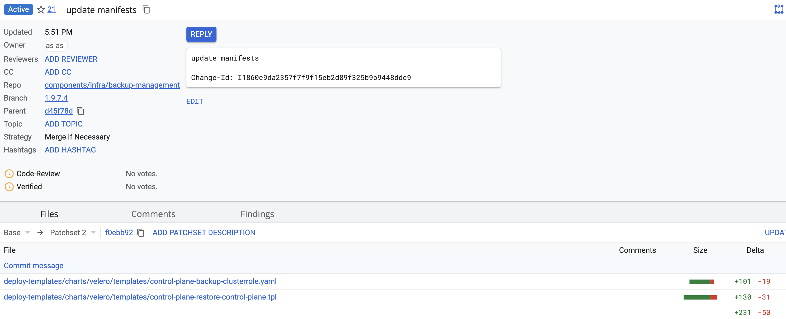
Після цього натисніть Code-Review +2, Verify +1 Submit та запустіть пайплайн MASTER-Build-cluster-mgmt. Дочекайтеся завершення збірки коду.
Виходячи з вашого прикладу і враховуючи гугл-стиль, я переформатую наданий чорновик у asciidoc форматі, дотримуючись зрозумілості, конкретності та точності інструкцій.
7. Важливі виправлення (хотфікси)
Налаштування валідації в консолі Control Plane для паролів користувачів
У зв’язку з впровадженням політик Keycloak для безпеки адміністративних акаунтів на продуктивних середовищах, необхідно внести зміни в інтерфейс користувача (UI) консолі Control Plane, щоб узгодити правила валідації паролів для нових користувачів.
Для розв’язання цього питання були розроблені спеціальні версії (хотфікси) консолі Control Plane, які потрібно застосувати після оновлення та інсталяції платформи версії 1.9.7.
-
Завантажте необхідні версії хотфіксів консолі Control Plane з Docker Hub за посиланням https://hub.docker.com/u/uss2jelastic:
control-plane-console-1-9-6-fix:1.9.6-FIX.5 control-plane-console-1-9-7-1:1.9.7.27
-
Опублікуйте завантажені версії хотфіксів, тобто виконайте
git pushу вашcontrol-plane-nexus. Докладні інструкції ви можете знайти на сторінці Перенесення Docker-образів до Nexus-кластера. -
Замініть поточні версії консолі Control Plane на хотфікс-версії.
Для цього, в репозиторії cluster-mgmt, у файлі deploy-templates/console-versions.yaml на гілці
masterоновіть вказівки на нові версії консолей:consoleVersions: ... - consoleVersion: 1.9.6-FIX.5 registryVersion: 1.9.6 stream: 1-9-6-fix - consoleVersion: 1.9.7.27 registryVersion: 1.9.7 stream: 1-9-7-1 -
Після внесення виправлень в Docker-образи через Gerrit, автоматично запуститься Jenkins-пайплайн MASTER-Build-cluster-mgmt, який актуалізує версії консолі Control Plane.